普通中年人的 2024 阅读流水账
约斯特普通
2024-12-30
2024 年把不少去年用于看书的时间用来运动，从而导致阅读量相较去年有明显下滑，好在体重维持住，体重没有反弹。
思来想去，还是采用极简的方式来做总结：
每个月只推荐印象深刻一本书，每本书只写一句话的推荐，把全年的阅读做一个小结。
一月
《你经历了什么》
心理学的书籍有很多，采取对话形式的着实偏少，每个人经历了什么很重要，但更重要的是如何正确认识这些经历并积极的去应对。
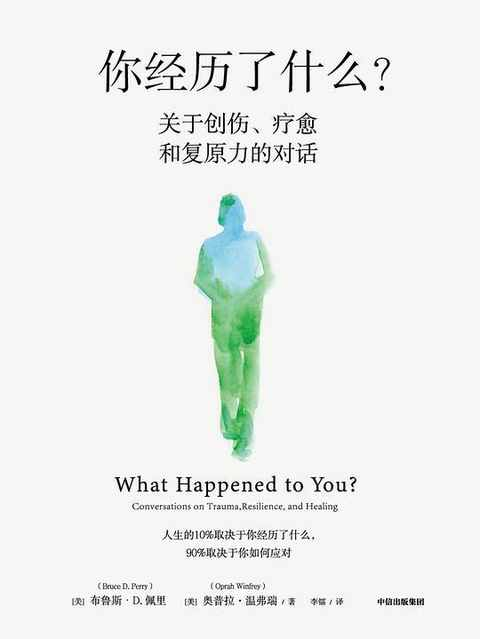
二月
《人地之间》
在还没有完整阐述作者的观点之前，他在前面几章详细列举了各地关于用地诸多方面数据，然后再逐个驳斥一些流行的观点，仅仅是前面几个章节就值回票价。
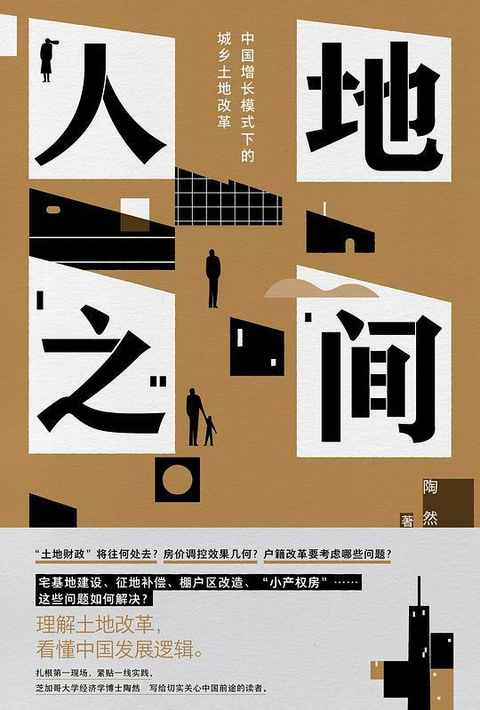
三月
《弱传播》
在网络的舆论场上，很大程度上现实中的强弱关系是对调的，而这样的故事时刻都在上演。
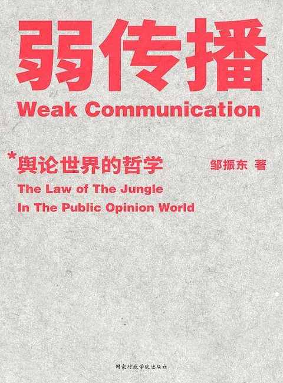
四月
《经典中医启蒙》
随着年龄的增长，会发现传统医学的可取之处越来越多。
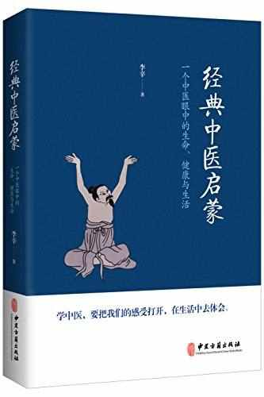
五月
《超越百岁》
长寿是可预支的未来，且长寿是可以通过科学的方式方法去达成的，作者结合自身的真实经历科普了诸多有益的知识。
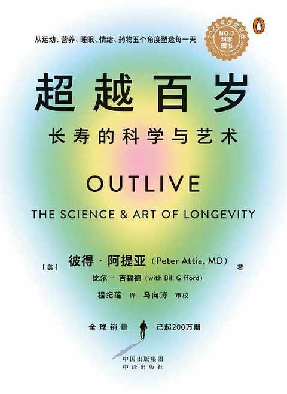
六月
《中年之路：人格的第二次成型》
不是只有国内有 35 岁的中年危机，发达国家也一样，在某一个年龄段都会和中年来一场艰难的遭遇战。
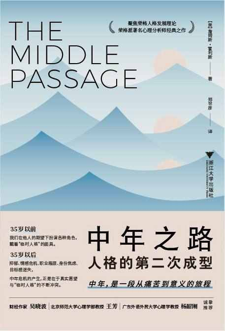
七月
《影响商业的 50 本书》
关于商业的书籍每年都会新推出很多，吴晓波信手拈来的介绍了 50 本影响商业的书籍，读完他的介绍就能更笃定先读哪几本。
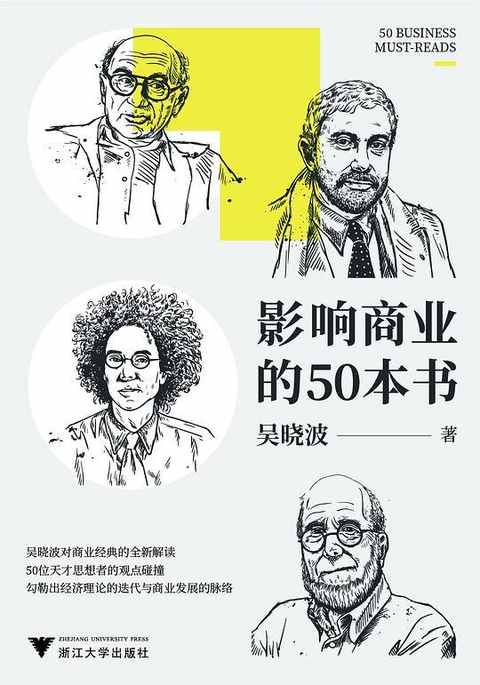
八月
《第一次做生意》
去做一个小生意可能是许多人的 plan B，那么这本书就是必读的。
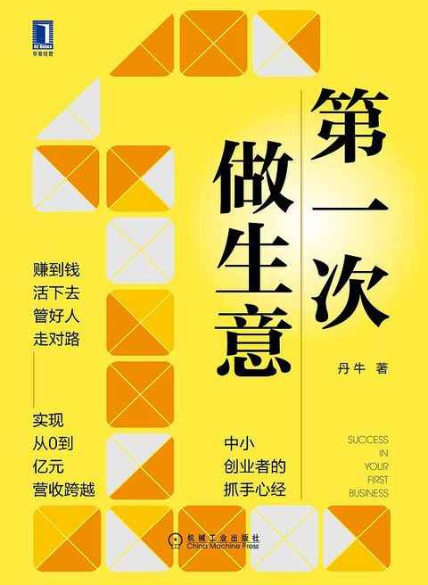
九月
《好好学习》
虽然当下 ai 已经足够强大，似乎越来越多的事情都能交由ai 来处理，但个人的底层操作系统同样需要迭代升级。
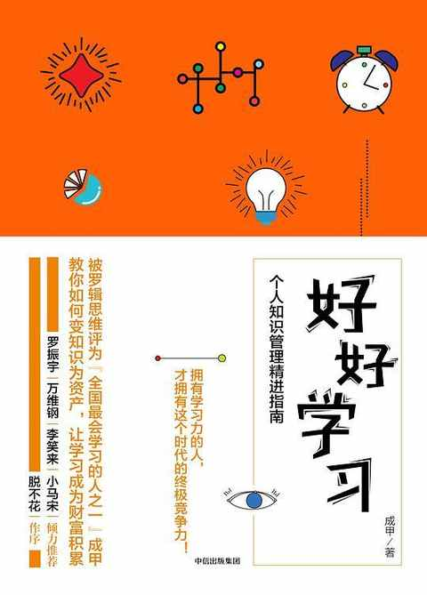
十月
《锻炼》
关于什么是锻炼，如何正确锻炼以及如何正确的使用身体。
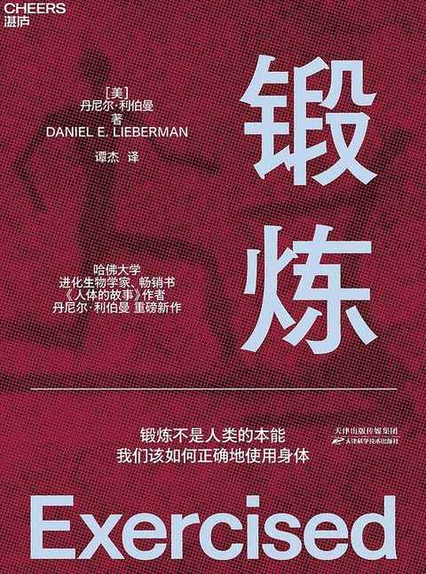
十一月
《父母：挑战》
育儿过程中的不可预知性极大，随时随时地挑战就来咯。
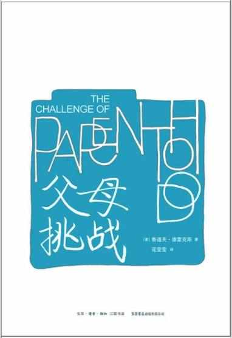
十二月
《沉默的甲午》
随着阅读进度的推进，一场 130 年前的战争的迷雾一点点散开，对历史上的风云人物们的认识也更加清晰，历史里有太多细节值得去细细品味。